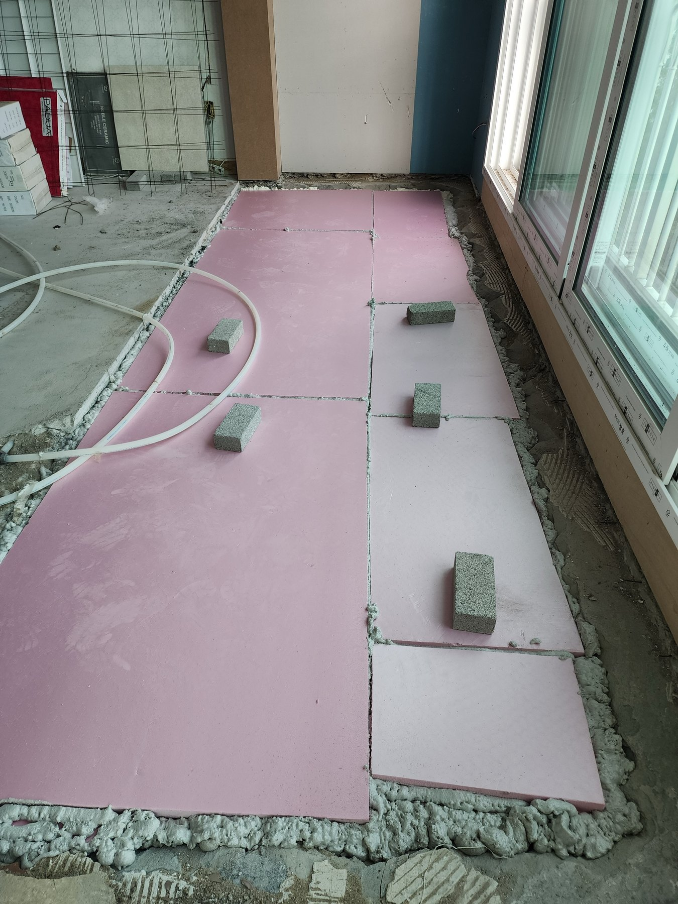
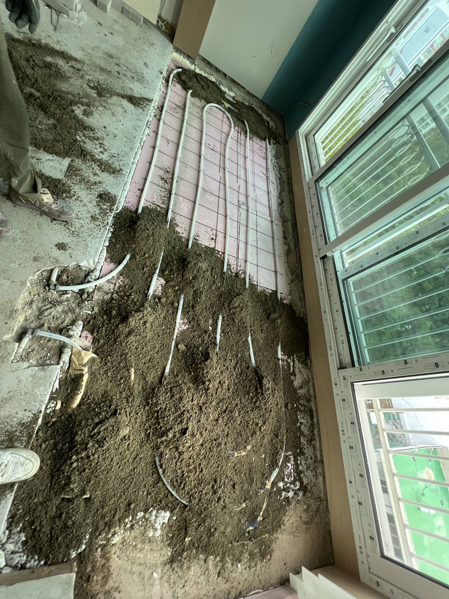
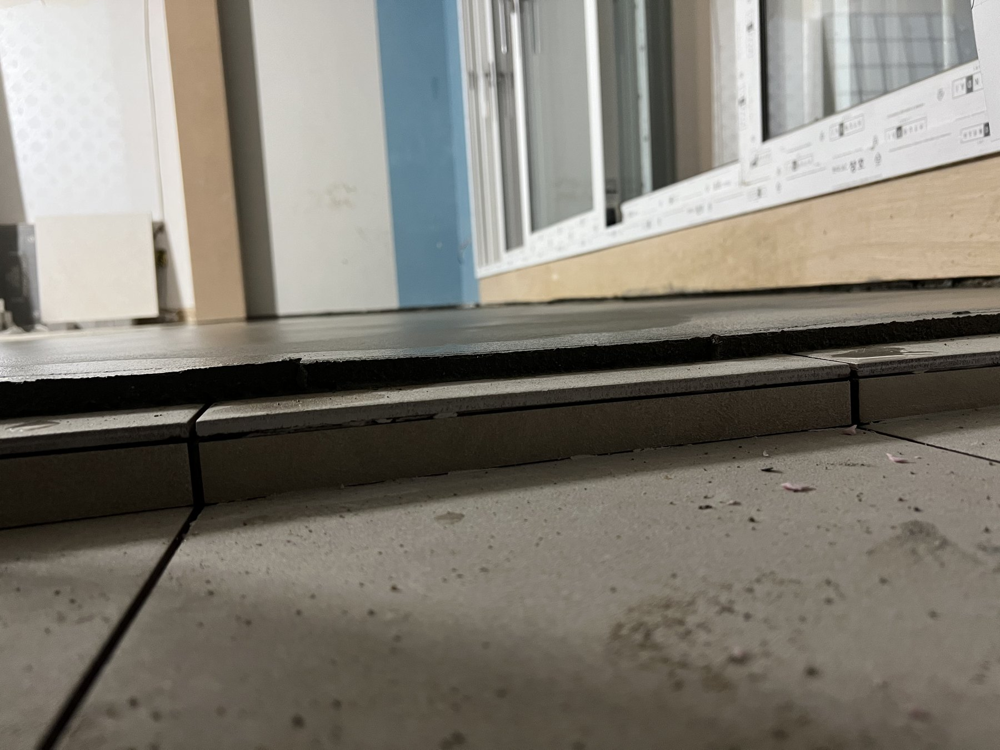

대전 금호한사랑아파트 베란다 확장 미장, 바닥 속부터 높이까지 맞춘 과정

현장 작업 한눈에 보기
- 현장
- 대전 금호한사랑아파트 거실 확장부
- 문제
- 거실과 베란다 경계의 단차
확장부 바닥 기반 정리 필요 - 작업
- 단열재 배치·난방배관 정리
높이 확인 후 모르타르 미장 - 결과
- 확장부 바닥면 평탄화
후속 바닥 마감 전 기반 정리
금호한사랑아파트 거실 확장부의 바닥을 정리했습니다. 단열재와 난방배관을 넣은 모습부터 모르타르로 덮은 뒤까지, 마감하면 보이지 않을 작업을 사진으로 소개합니다.
거실과 이어질 바닥을 만드는 일
안녕하세요. 만물인테리어입니다. 이번에는 대전 금호한사랑아파트의 거실 베란다 확장부를 소개합니다.
바닥재를 깔기 전, 단열재와 난방배관을 배치하고 기존 거실과 이어질 바닥 높이를 맞추는 미장 작업을 진행했습니다.
1. 확장부 모양에 맞춰 단열재 배치
먼저 확장부 바닥에 단열재를 맞춰 넣었습니다. 창호와 벽 가장자리까지 공간의 모양에 따라 채운 모습입니다.
이 위로 난방배관과 미장층이 올라가면 단열재는 보이지 않게 됩니다.

2. 난방배관을 놓고 미장 시작
단열재 위에는 난방배관을 돌려 배치했습니다. 사진에는 배관이 드러난 부분과 모르타르를 채우기 시작한 부분이 함께 보입니다.
바닥 속 구성이 어떻게 이어지는지 볼 수 있는 작업 중간 단계입니다.

3. 문턱과 기존 바닥의 높이 맞추기
이번 미장에서 살펴볼 곳은 넓은 바닥면뿐만이 아니었습니다. 창호 아래 문턱과 기존 거실이 만나는 경계도 함께 확인했습니다.
후속 바닥 마감을 고려해 이 경계의 높이를 맞춰 가며 미장했습니다.

4. 배관을 덮고 바닥면 정리
모르타르로 난방배관을 덮고 확장부 표면을 고르게 정리했습니다. 앞 사진의 배관이 가려지고 하나의 바닥면으로 이어졌습니다.
사진은 미장을 마친 상태입니다. 최종 바닥재까지 시공한 모습과는 구분해 주세요.

완성 사진만큼 필요한 중간 사진
단열재, 난방배관, 바닥 높이 확인까지 순서대로 보니 미장 아래 구성이 이해되시지요.
확장 공사를 기록할 때는 이렇게 덮기 전 사진도 함께 남겨 두는 것이 좋습니다.
다음 공정은 양생 상태를 살핀 뒤에
미장 표면이 말라 보인다고 바로 바닥재를 시공할 수 있는 것은 아닙니다. 현장 온도와 습도, 미장 두께에 따라 굳는 시간이 달라집니다.
확장 공사를 계획하신다면 미장 뒤 양생 과정까지 일정에 포함해 주세요.